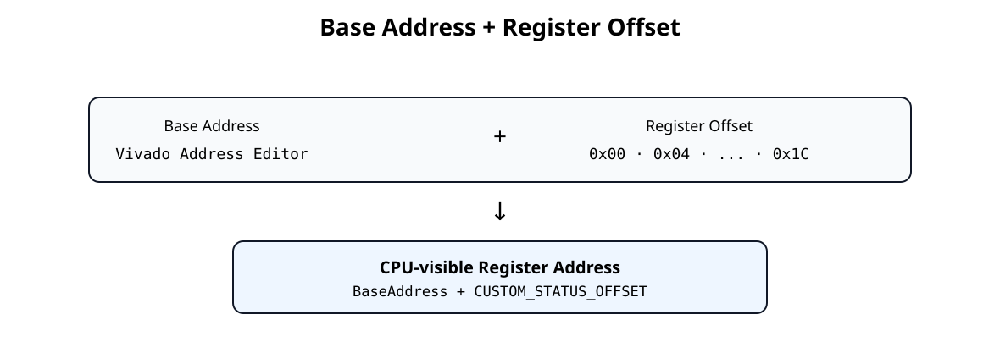
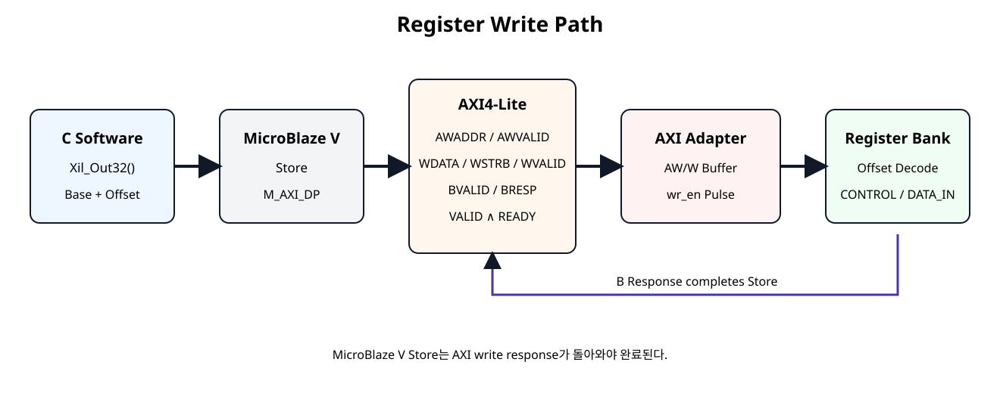
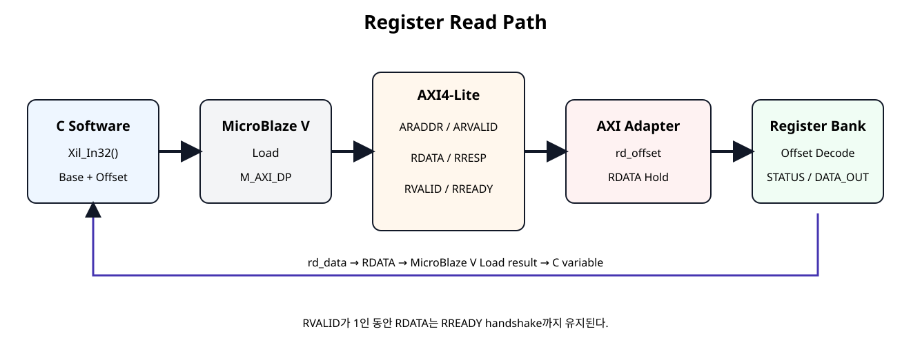

Write
C Store가 AW/W/B Transaction으로 바뀌고 Register Bank Write까지 도달한다.
Basys3 SoC + NPU · SoC 13
C 코드의 Register Read/Write 한 줄이 MicroBlaze V Load/Store, AXI4-Lite Handshake, Slave Adapter, Register Bank를 거쳐 실제 Control/Status Signal로 연결되는 과정을 끝까지 추적한다.
C Store가 AW/W/B Transaction으로 바뀌고 Register Bank Write까지 도달한다.
C Load가 AR/R Transaction을 통해 Register 값을 Software로 되돌린다.
Software Macro, AXI Signal, 내부 Offset, RTL Signal의 대응 관계를 하나로 본다.
SoC 12에서 AXI4-Lite Slave Adapter와 Register Bank를 연결했다. 이번 장에서는 새로운 RTL 기능을 추가하지 않고, 이미 만든 회로 안에서 하나의 Register Access가 어떤 순서로 이동하는지 추적한다.
Read는 반대 방향으로 Register Bank의 rd_data가 AXI R Channel을 타고 CPU Load 결과로 돌아온다.

| 구분 | 결정 위치 | 예 |
|---|---|---|
| Base Address | Vivado Address Editor | 실제 Project에서 생성 |
| Register Offset | Custom IP 설계 | 0x00, 0x04, ... 0x1C |
| CPU-visible Address | 두 값의 합 | Base + CUSTOM_STATUS_OFFSET |

Custom_WriteReg(
BaseAddress,
CUSTOM_CONTROL_OFFSET,
0x00000005U
);Header Macro는 내부적으로 다음 구조를 사용한다.
#define Custom_WriteReg(BaseAddress, RegOffset, Data) \
Xil_Out32((BaseAddress) + (RegOffset), (Data))Xil_Out32()는 지정 주소를 volatile u32 *로 접근해 32-bit Store를 수행한다.
MicroBlaze V Data Peripheral Interface는 기본적으로 AXI4-Lite 단일 접근을 사용한다. Software의 32-bit Store가 Peripheral Address를 대상으로 하면 AXI Write Transaction으로 전달된다.
Write Address Channel과 Write Data Channel은 서로 독립이다.
SoC 12 Adapter는 Address와 Data를 각각 별도 Buffer에 저장한다.
assign write_commit =
aw_stored && w_stored && !s_axi_bvalid;
assign wr_en = write_commit;
assign wr_offset = awaddr_stored[7:0];
assign wr_data = wdata_stored;
assign wr_strb = wstrb_stored;Address와 Data가 모두 확보된 경우에만 내부 Register Write Pulse가 생성된다.
wr_en=1이면 Register Bank가 wr_offset을 Decode한다.
case (wr_offset)
REG_CONTROL: begin
if (wr_strb[0]) begin
enable_o <= wr_data[0];
mode_o <= wr_data[2:1];
end
end
REG_DATA_IN: begin
...
end
endcaseCONTROL=0x00000005이면 enable_o=1, mode_o=2가 된다.
if (write_commit) begin
s_axi_bresp <= AXI_RESP_OKAY;
s_axi_bvalid <= 1'b1;
end
if (s_axi_bvalid && s_axi_bready) begin
s_axi_bvalid <= 1'b0;
endMicroBlaze V Data Peripheral Interface는 Write Response를 기다린다. 따라서 Register가 갱신된 뒤 B Channel Handshake까지 완료되어야 Software Store가 끝난 것으로 이해할 수 있다.

status = Custom_ReadReg(
BaseAddress,
CUSTOM_STATUS_OFFSET
);#define Custom_ReadReg(BaseAddress, RegOffset) \
Xil_In32((BaseAddress) + (RegOffset))Xil_In32()는 지정 주소를 volatile u32 *로 읽어 32-bit Load 결과를 반환한다.
STATUS Register는 CPU 입장에서 일반 Memory-Mapped Address이며, 실제 내용은 Hardware Status Signal에서 만들어진다.
assign s_axi_arready =
s_axi_aresetn && !s_axi_rvalid;
assign rd_offset = s_axi_araddr[7:0];이 기본 Slave는 이전 Read Response가 남아 있지 않을 때만 다음 Address를 받는 Single-Outstanding 구조이다.
REG_STATUS: begin
rd_data = {29'h0, error_i, done_i, busy_i};
end예를 들어 busy_i=1, done_i=1, error_i=0이면 STATUS Read 결과는 0x00000003이다.
if (s_axi_arready && s_axi_arvalid) begin
s_axi_rdata <= rd_data;
s_axi_rresp <= AXI_RESP_OKAY;
s_axi_rvalid <= 1'b1;
end else if (s_axi_rvalid && s_axi_rready) begin
s_axi_rvalid <= 1'b0;
endMaster가 아직 RREADY=0이면 Slave는 이미 제시한 RDATA와 RVALID를 유지해야 한다.
DATA_IN은 retained RW Register이므로 Software가 쓴 값이 Hardware 출력으로 유지되고 다시 Read할 수 있다.
STATUS는 RO이므로 Software Write는 상태를 바꾸지 않는다.
COMMAND는 저장 Register가 아니라 Event Pulse Register이다. Read하면 항상 0을 반환한다.
W1C는 0을 쓰는 것이 아니라 Clear하려는 Bit에 1을 쓰는 방식이다.
32-bit Write에서도 WSTRB[3:0]는 어떤 Byte Lane이 유효한지 나타낸다.
| WSTRB | 유효 Byte |
|---|---|
0001 | bits [7:0] |
0010 | bits [15:8] |
0100 | bits [23:16] |
1000 | bits [31:24] |
1111 | 32-bit 전체 |
DATA_IN은 Byte별로 wr_strb를 확인해 부분 Write를 지원한다.
다음 예제는 Base Address를 함수 인자로 받아 Register Write/Read 순서를 보여준다. Vivado Address Editor의 실제 Base Address를 호출자가 전달한다.
#include "custom_regmap.h"
#include "xil_types.h"
/*
* SoC 13 - AXI Register Read / Write Path Demo
*
* BaseAddress is supplied by the caller.
* This file does not hard-code a Vivado-assigned AXI base address.
*
* The purpose is to show:
* C helper -> Xil_In32 / Xil_Out32
* -> MicroBlaze V load/store
* -> AXI4-Lite transaction
* -> AXI adapter
* -> custom_register_bank
*/
typedef struct {
u32 control_readback;
u32 status;
u32 data_in_readback;
u32 data_out;
u32 irq_status;
u32 version;
u32 id;
} CustomPathSnapshot;
void Custom_RegisterPathDemo(
UINTPTR BaseAddress,
CustomPathSnapshot *Snapshot
)
{
u32 control_value;
/*
* WRITE #1
* CONTROL[0] = ENABLE
* CONTROL[2:1] = MODE
*
* MODE = 2, ENABLE = 1
* CONTROL data -> 0b101 -> 0x00000005
*/
control_value =
CUSTOM_CONTROL_ENABLE_MASK |
(2U << CUSTOM_CONTROL_MODE_SHIFT);
Custom_WriteReg(
BaseAddress,
CUSTOM_CONTROL_OFFSET,
control_value
);
/*
* READ #1
* Read CONTROL back through the AXI read path.
*/
Snapshot->control_readback =
Custom_ReadReg(BaseAddress, CUSTOM_CONTROL_OFFSET);
/*
* WRITE #2
* DATA_IN is a retained RW register.
*/
Custom_WriteReg(
BaseAddress,
CUSTOM_DATA_IN_OFFSET,
0x12345678U
);
Snapshot->data_in_readback =
Custom_ReadReg(BaseAddress, CUSTOM_DATA_IN_OFFSET);
/*
* WRITE #3
* COMMAND is W1P.
* Writing bit0 = 1 generates start_pulse_o for one clock.
* No retained command state remains afterward.
*/
Custom_Start(BaseAddress);
/*
* READ hardware-driven registers.
* STATUS / DATA_OUT values depend on the connected controller/datapath.
*/
Snapshot->status =
Custom_ReadReg(BaseAddress, CUSTOM_STATUS_OFFSET);
Snapshot->data_out =
Custom_ReadReg(BaseAddress, CUSTOM_DATA_OUT_OFFSET);
Snapshot->irq_status =
Custom_ReadReg(BaseAddress, CUSTOM_IRQ_STATUS_OFFSET);
/*
* If DONE IRQ is pending, clear only that W1C bit.
*/
if ((Snapshot->irq_status & CUSTOM_IRQ_DONE_MASK) != 0U) {
Custom_ClearDoneIrq(BaseAddress);
}
/*
* Fixed RO identification registers.
*/
Snapshot->version =
Custom_ReadReg(BaseAddress, CUSTOM_VERSION_OFFSET);
Snapshot->id =
Custom_ReadReg(BaseAddress, CUSTOM_ID_OFFSET);
}Transaction 추적용 Testbench는 다음 항목을 확인한다.
`timescale 1ns / 1ps
module tb_axi_register_rw_path;
localparam integer ADDR_W = 32;
reg clk = 1'b0;
reg resetn = 1'b0;
always #5 clk = ~clk;
reg [ADDR_W-1:0] awaddr;
reg [2:0] awprot;
reg awvalid;
wire awready;
reg [31:0] wdata;
reg [3:0] wstrb;
reg wvalid;
wire wready;
wire [1:0] bresp;
wire bvalid;
reg bready;
reg [ADDR_W-1:0] araddr;
reg [2:0] arprot;
reg arvalid;
wire arready;
wire [31:0] rdata;
wire [1:0] rresp;
wire rvalid;
reg rready;
reg busy_i;
reg done_i;
reg error_i;
reg irq_done_event_i;
reg irq_error_event_i;
reg [31:0] data_out_i;
wire enable_o;
wire [1:0] mode_o;
wire start_pulse_o;
wire clear_pulse_o;
wire [31:0] data_in_o;
wire [1:0] irq_status_o;
integer error_count = 0;
custom_axi4lite_ip #(
.C_S_AXI_ADDR_WIDTH(ADDR_W)
) dut (
.s_axi_aclk(clk),
.s_axi_aresetn(resetn),
.s_axi_awaddr(awaddr),
.s_axi_awprot(awprot),
.s_axi_awvalid(awvalid),
.s_axi_awready(awready),
.s_axi_wdata(wdata),
.s_axi_wstrb(wstrb),
.s_axi_wvalid(wvalid),
.s_axi_wready(wready),
.s_axi_bresp(bresp),
.s_axi_bvalid(bvalid),
.s_axi_bready(bready),
.s_axi_araddr(araddr),
.s_axi_arprot(arprot),
.s_axi_arvalid(arvalid),
.s_axi_arready(arready),
.s_axi_rdata(rdata),
.s_axi_rresp(rresp),
.s_axi_rvalid(rvalid),
.s_axi_rready(rready),
.busy_i(busy_i),
.done_i(done_i),
.error_i(error_i),
.irq_done_event_i(irq_done_event_i),
.irq_error_event_i(irq_error_event_i),
.data_out_i(data_out_i),
.enable_o(enable_o),
.mode_o(mode_o),
.start_pulse_o(start_pulse_o),
.clear_pulse_o(clear_pulse_o),
.data_in_o(data_in_o),
.irq_status_o(irq_status_o)
);
task automatic expect32;
input [31:0] actual;
input [31:0] expected;
input [8*48-1:0] label;
begin
if (actual !== expected) begin
$display("FAIL: %0s actual=%08h expected=%08h",
label, actual, expected);
error_count = error_count + 1;
end else begin
$display("PASS: %0s = %08h", label, actual);
end
end
endtask
task automatic axi_write;
input [31:0] addr;
input [31:0] data;
input [3:0] strb;
begin
@(negedge clk);
awaddr = addr;
awvalid = 1'b1;
wait (awready === 1'b1);
@(negedge clk);
awvalid = 1'b0;
/* W channel intentionally arrives later than AW. */
repeat (2) @(negedge clk);
wdata = data;
wstrb = strb;
wvalid = 1'b1;
wait (wready === 1'b1);
@(negedge clk);
wvalid = 1'b0;
/* Hold BREADY low to prove BVALID remains asserted. */
bready = 1'b0;
wait (bvalid === 1'b1);
repeat (2) @(posedge clk);
if (bvalid !== 1'b1) begin
$display("FAIL: BVALID did not hold during backpressure");
error_count = error_count + 1;
end
@(negedge clk);
bready = 1'b1;
@(posedge clk);
@(negedge clk);
bready = 1'b0;
end
endtask
task automatic axi_read;
input [31:0] addr;
output [31:0] data;
begin
@(negedge clk);
araddr = addr;
arvalid = 1'b1;
wait (arready === 1'b1);
@(negedge clk);
arvalid = 1'b0;
rready = 1'b0;
wait (rvalid === 1'b1);
/* RDATA must remain stable while RREADY is low. */
data = rdata;
repeat (2) @(posedge clk);
if (rdata !== data) begin
$display("FAIL: RDATA changed while RREADY=0");
error_count = error_count + 1;
end
@(negedge clk);
rready = 1'b1;
@(posedge clk);
@(negedge clk);
rready = 1'b0;
end
endtask
reg [31:0] rd;
initial begin
awaddr = 0;
awprot = 0;
awvalid = 0;
wdata = 0;
wstrb = 0;
wvalid = 0;
bready = 0;
araddr = 0;
arprot = 0;
arvalid = 0;
rready = 0;
busy_i = 0;
done_i = 0;
error_i = 0;
irq_done_event_i = 0;
irq_error_event_i = 0;
data_out_i = 32'h00000000;
repeat (4) @(posedge clk);
resetn = 1'b1;
repeat (2) @(posedge clk);
$display("---- WRITE PATH: CONTROL ----");
axi_write(32'h00000000, 32'h00000005, 4'b1111);
expect32({29'h0, mode_o, enable_o}, 32'h00000005,
"CONTROL hardware output");
$display("---- READ PATH: CONTROL ----");
axi_read(32'h00000000, rd);
expect32(rd, 32'h00000005, "CONTROL readback");
$display("---- WRITE/READ PATH: DATA_IN ----");
axi_write(32'h00000010, 32'h12345678, 4'b1111);
expect32(data_in_o, 32'h12345678, "DATA_IN hardware output");
axi_read(32'h00000010, rd);
expect32(rd, 32'h12345678, "DATA_IN readback");
$display("---- READ PATH: STATUS ----");
busy_i = 1'b1;
done_i = 1'b1;
error_i = 1'b0;
axi_read(32'h00000004, rd);
expect32(rd, 32'h00000003, "STATUS read");
$display("---- READ PATH: DATA_OUT ----");
data_out_i = 32'hCAFE1234;
axi_read(32'h00000014, rd);
expect32(rd, 32'hCAFE1234, "DATA_OUT read");
$display("---- WRITE PATH: COMMAND W1P ----");
fork
begin
axi_write(32'h00000008, 32'h00000001, 4'b0001);
end
begin
wait (start_pulse_o === 1'b1);
@(posedge clk);
// (추가) 비차단 대입이 반영된 뒤 펄스 해제를 확인한다.
#1;
if (start_pulse_o !== 1'b0) begin
$display("FAIL: start_pulse_o wider than one clock");
error_count = error_count + 1;
end else begin
$display("PASS: start_pulse_o one clock");
end
end
join
$display("---- W1C PATH: IRQ_STATUS ----");
@(negedge clk);
irq_done_event_i = 1'b1;
@(posedge clk);
@(negedge clk);
irq_done_event_i = 1'b0;
axi_read(32'h0000000C, rd);
expect32(rd, 32'h00000001, "IRQ_STATUS set");
axi_write(32'h0000000C, 32'h00000001, 4'b0001);
axi_read(32'h0000000C, rd);
expect32(rd, 32'h00000000, "IRQ_STATUS cleared");
$display("---- FIXED RO REGISTERS ----");
axi_read(32'h00000018, rd);
expect32(rd, 32'h00010000, "VERSION");
axi_read(32'h0000001C, rd);
expect32(rd, 32'h524D4150, "ID");
if (error_count == 0) begin
$display("SOC13 REGISTER R/W PATH TEST: PASS");
end else begin
$display("SOC13 REGISTER R/W PATH TEST: FAIL (%0d errors)",
error_count);
end
#50;
$finish;
end
endmodule
| 순서 | 신호 | 확인 내용 |
|---|---|---|
| 1 | AWVALID/AWREADY | Write Address accepted |
| 2 | WVALID/WREADY | Write Data accepted |
| 3 | wr_en | Address/Data 모두 확보 후 1-Clock Pulse |
| 4 | BVALID/BREADY | Write Response 완료 |
| 5 | ARVALID/ARREADY | Read Address accepted |
| 6 | rd_offset/rd_data | Register Decode 결과 |
| 7 | RVALID/RREADY | Read Data Transfer 완료 |
| 증상 | 원인 후보 | 확인 |
|---|---|---|
| CONTROL Write가 가끔 누락 | AW/W 동시 도착 가정 | 별도 Buffer 구조 확인 |
| Partial Write가 전체 Register를 덮음 | WSTRB 무시 | wr_strb 전달 및 Byte Enable |
| Read Data가 바뀜 | RREADY 대기 중 RDATA 재계산 | AR handshake 때 RDATA Capture |
| Software 주소가 틀림 | Base/Offset 혼동 | Vivado Base + Header Offset |
| COMMAND가 계속 1 | W1P를 retained bit로 구현 | 다음 Clock 기본 0 처리 |
| IRQ Clear가 안 됨 | W1C 의미 오해 | Clear할 Bit에 1 Write |
| Store가 끝났다고 너무 일찍 판단 | B Response 무시 | BVALID/BREADY 완료 확인 |
Xil_Out32()가 Memory-Mapped 32-bit Write임을 이해한다.Xil_In32()가 Memory-Mapped 32-bit Read임을 이해한다.wr_en이 Address/Data 모두 확보된 후 발생함을 이해한다.WSTRB가 Byte Lane Write Enable임을 이해한다.RVALID 동안 RDATA가 유지되어야 함을 이해한다.| 문서 | 확인 항목 |
|---|---|
| AMD UG1629 · Memory Mapped Interfaces · 2026.1 | MicroBlaze V M_AXI_DP 단일 접근, AXI4-Lite 기본 사용, BVALID 완료 조건 |
| AMD PG292 · AXI4-Lite Interface Ports · 2026 | AW/W/B/AR/R 신호와 WSTRB 정의 |
| AMD PG138 · AXI4-Lite Interface · 2026-08-10 | Read Address/Read Data VALID/READY 동작 |
| AMD/Xilinx embeddedsw · xil_io.h | Xil_In32, Xil_Out32 volatile Memory Access |